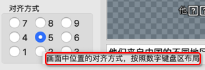

指定字幕位置
- 最简单但常见的需求：无需操心字幕的具体位置，只需要保证字幕在视频底部
- 则可以直接嵌入字幕，其中字幕文件是srt或ass均可
ffmpeg -i input.mp4 -vf subtitles=input.srt output.mp4 ffmpeg -i input.mp4 -vf ass=subtitle.ass output.mp4
- 则可以直接嵌入字幕，其中字幕文件是srt或ass均可
- 高级需求：指定字幕的具体的位置（不同区域，具体边距等）
- 前提：必须是ass文件（才能用参数指定字幕位置），srt无法指定字幕位置
- 如果是srt文件，则需要先去转换成ass文件
ffmpeg -i input.srt output.ass
- 如果是srt文件，则需要先去转换成ass文件
- 前提：必须是ass文件（才能用参数指定字幕位置），srt无法指定字幕位置
嵌入ass字幕到视频中
ffmpeg -i input.mp4 -vf "ass=input.ass" output.mp4
其中：
ass字幕文件input.ass中，有对应的位置的参数配置
[V4+ Styles] Format: Name, Fontname, Fontsize, PrimaryColour, SecondaryColour, OutlineColour, BackColour, Bold, Italic, Underline, StrikeOut, ScaleX, ScaleY, Spacing, Angle, BorderStyle, Outline, Shadow, Alignment, MarginL, MarginR, MarginV, Encoding Style: Default,Arial,16,&Hffffff,&Hffffff,&H0,&H0,0,0,0,0,100,100,0,0,1,1,0,2,10,10,10,0- 其中：
Alignment：默认为2= 底部居中- 就满足了我们希望的：字幕在底部居中的位置
- 其中：
微调左右间距和底部间距
- 再去微调左右间距和底部间距时
- 再去改动：
MarginL, MarginR, MarginV
- 比如：
MarginL, MarginR, MarginV 20,20,10 - 即可实现：
MarginL=MarginR：左右间距20MarginV：底部向上间距10
- 再去改动：
嵌入ass字幕举例
字幕文件：
input/5d41d82f52247ce73d40475b_cfgPosition.assass文件中相关参数
Format: Name, Fontname, Fontsize, PrimaryColour, SecondaryColour, OutlineColour, BackColour, Bold, Italic, Underline, StrikeOut, ScaleX, ScaleY, Spacing, Angle, BorderStyle, Outline, Shadow, Alignment, MarginL, MarginR, MarginV, Encoding Style: Default,Arial,16,&Hffffff,&Hffffff,&H0,&H0,0,0,0,0,100,100,0,0,1,1,0,2,20,20,10,0- 参数说明
- 字幕位置主要影响因素
- 字幕主体所在区域
Alignment- 默认为
2= 底部居中 - 其中值：
1-9- 逻辑：和键盘中数字的排布一致
- 见图：
- 
- 默认为
- 字幕主体所在区域
- 字幕位置次要影响因素
- 字幕的边距
- （字幕距离）左右的边距：
MarginL和MarginR：20 - （字幕距离）底部的边距：
10
- （字幕距离）左右的边距：
- 字幕的边距
- 字幕位置主要影响因素
- 参数说明
- 命令
ffmpeg -i input/5d41d82f52247ce73d40475b_extendedAll.mp4 -vf "ass=input/5d41d82f52247ce73d40475b_cfgPosition.ass" output/5d41d82f52247ce73d40475b_addedAss_marginV10LR20.mp4 - 效果